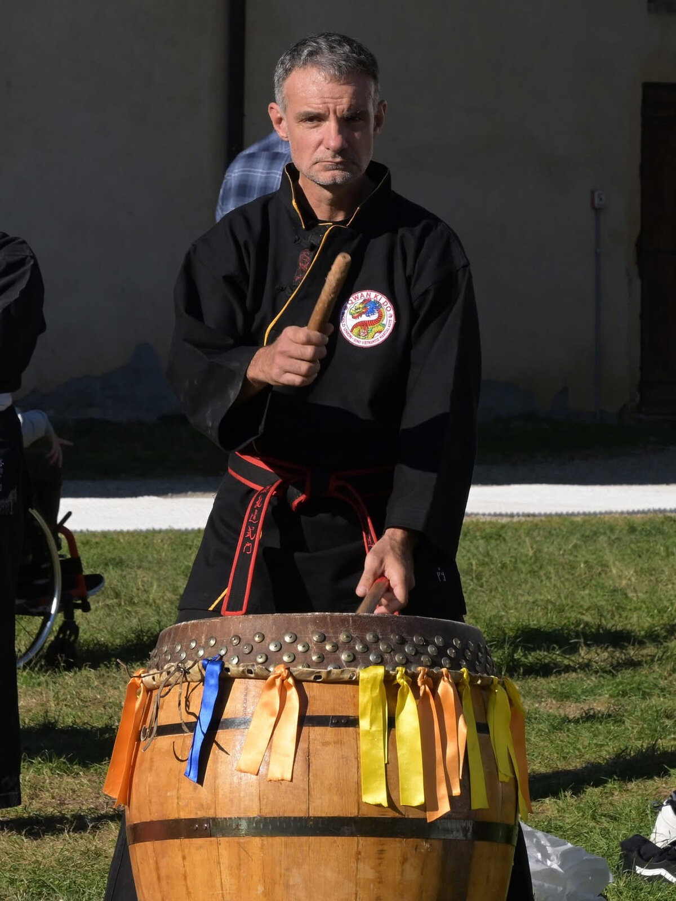

Daniele Parmeggiani.
Due formazioni, un unico lavoro.
Daniele pratica il Qwan Ki Do dal 1994. È allievo del Maestro Claudio Grossi, (6° Dang) guida del Vo Duong Dai Viet Quang Trung di Abbiategrasso — luogo in cui si è formato e dove continua la propria pratica. Nel 2022 ha conseguito il 4º Dang.
Dal 2004 è responsabile del Tay Son di Vigevano, che ha aperto con l'obiettivo dichiarato di portare in città un kung fu tradizionale cino-vietnamita inserito in una cornice pedagogica seria. Parallelamente alla vita marziale, è laureato in Scienze dell'Educazione e lavora come pedagogista ed educatore. È padre di tre figli.
- Grado4º Dang (2022)
- Pratica dal1994
- Istruttore dal2004
- MaestroClaudio Grossi
- FormazioneScienze dell'Educazione
- ProfessionePedagogista · Educatore
L'approccio
Pedagogia e arte marziale non sono, nel lavoro di Daniele, due cappelli che si alternano. Sono la stessa postura di lavoro applicata a due contesti.
In palestra questo significa cose concrete. Significa che la lezione viene pensata conoscendo come si strutturano l'attenzione, la motivazione, la fatica di un bambino di sette anni e di un adulto di quaranta. Significa che l'errore non viene punito ma letto — si interviene sulla causa, non sul sintomo. Significa che il gruppo non è uno sfondo neutro: è un'infrastruttura educativa che va curata perché regga sia i più forti sia i più fragili.
Non è una posizione buonista. La tecnica si chiede in modo esigente. Il saluto, la puntualità, la postura, il rispetto del compagno non sono variabili. Le regole sono poche, ma vincolanti. Dentro questa struttura, però, c'è attenzione vera al singolo.
Un buon istruttore non è quello che trasmette più tecniche nel minor tempo. È quello che al decimo anno hai ancora voglia di ascoltare.
Che tipo di gruppo costruiamo
Una cosa su cui Daniele torna spesso è lo spirito di gruppo. Un club non è una somma di praticanti che usano lo stesso spazio: è una comunità di apprendimento con regole condivise, in cui chi è più avanti si prende cura di chi è più indietro, e in cui non si lascia indietro chi fatica.
Questo modo di lavorare tende a produrre allievi che restano a lungo. Alcuni sono nel Tay Son da anni, altri arrivano, altri escono per riprendere più tardi — ma tutti sanno che il club non è un servizio che offre prestazioni. È un posto a cui si appartiene e in cui si ha un ruolo, per quanto piccolo.
Sull'agonismo
Il Tay Son ha accompagnato alle gare molti allievi, in Italia e all'estero. La competizione, per Daniele, è uno strumento — non un fine. Serve a mettersi alla prova sotto pressione, a misurare la qualità della propria tecnica in condizioni reali, a imparare come si sta dentro la paura e dentro la soddisfazione. È un confronto che fa crescere: di sé con sé stessi, e del dojo con altri dojo.
Chi vuole può percorrere la strada agonistica con un supporto tecnico serio. Chi non vuole trova in palestra un percorso altrettanto completo, semplicemente strutturato in modo diverso. Il gruppo non si divide tra agonisti e non agonisti: si allena insieme.

Daniele al tamburo cerimoniale: il ritmo che apre le occasioni importanti della scuola.
Non sto cercando allievi per questa stagione. Sto cercando persone che, fra dieci anni, riconosceranno ancora in questo club un punto di riferimento. Daniele Parmeggiani
È venire a vedere.
Ogni descrizione è più lunga e meno precisa di una singola lezione di prova. La prima è gratuita.